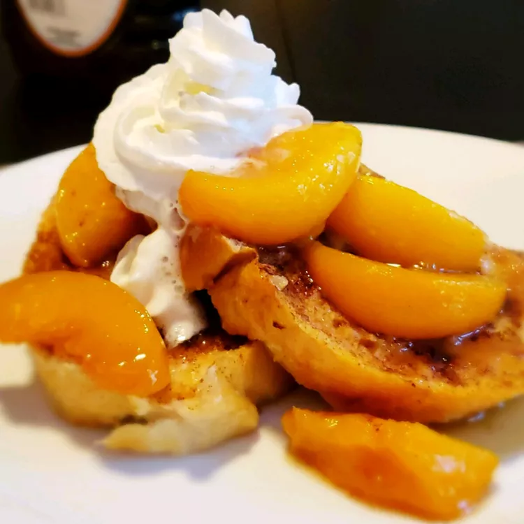

Peach French Toast

Description
My mother gave me this to use at my mother group. Everyone loved it so I decided to post it and share the great blend of peaches and French toast. Smells great when cooking.
Ingredients
- 1 cup packed brown sugar
- ½ cup butter
- 2 tablespoons water
- 1 (29 ounce) can sliced peaches, drained
- 12 (3/4 inch thick) slices day-old French bread
- 5 eggs
- 1 tablespoon vanilla extract
- 1 pinch ground cinnamon, or to taste
Steps
- In a saucepan, stir together the brown sugar, butter and water. Bring to a boil, then reduce heat to low, and simmer for 10 minutes, stirring frequently.
- Pour the brown sugar mixture into a 9x13 inch baking dish, and tilt the dish to cover the entire bottom. Place peaches in a layer over the sugar coating, then top with slices of French bread. In a medium bowl, whisk together the eggs and vanilla. Slowly pour over the bread slices to coat evenly. Sprinkle cinnamon over the top. Cover and refrigerate for 8 hours or overnight.
- Remove the dish from the refrigerator about 30 minutes before baking to come to room temperature. Preheat the oven to 350 degrees F (175 degrees C).
- Bake for 25 to 30 minutes in the preheated oven, or until the bread is golden brown. Spoon out portions to serve.